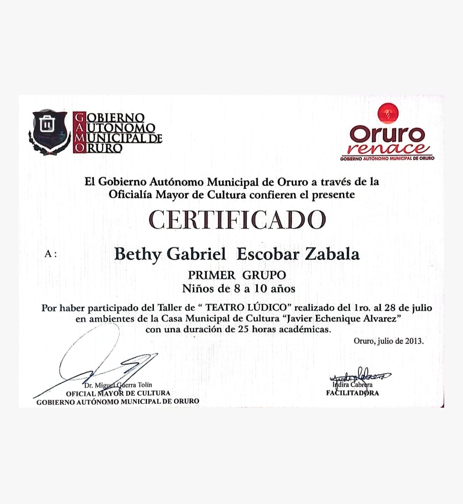

PORTFOLIO


Hola, soy Betty Escobar. Me encanta explorar nuevas tecnologías y aprender todo lo posible sobre desarrollo, desde bases de datos hasta diseño de interfaces. Aunque mi experiencia es aún limitada, tengo un fuerte compromiso con seguir creciendo y perfeccionando mis habilidades para convertirme en una Ingeniera.
Comencé mis estudios en el colegio "Donato Vásquez" después de finalizar la primaria. Durante mi tiempo en esta institución, tuve la oportunidad de aprender y crecer tanto académicamente como personalmente. Continué mis estudios allí, lo que me permitió completar mi bachillerato, y estoy agradecida por las experiencias y los conocimientos adquiridos que me han preparado para el futuro.
Desde temprana edad, cultivó un profundo interés por las artes, especialmente en la danza, la actuación y la poesía. Participó en varios concursos durante eventos municipales, lo que me ha permitido expresar mi creatividad y conectar con la comunidad, además de desarrollar habilidades como la expresión y comunicación, habilidades que considero valiosas.
Tengo una profunda pasión por la fotografía, especialmente en la captura de la belleza de los atardeceres. Este hobby me ha permitido desarrollar un ojo atento para los detalles, así como una apreciación por la luz y el color. A través de esta experiencia, he mejorado mis habilidades creativas y técnicas, aprendiendo también la importancia de la paciencia y la observación en cada toma."
Actualmente, estoy cursando el cuarto semestre de Ingeniería de Sistemas. Este programa me proporciona una formación sólida en programación, desarrollo de software y gestión de bases de datos. Trabajó en proyectos prácticos que han fortalecido mis habilidades analíticas y de resolución de problemas, así como mi capacidad para trabajar en equipo. Estoy entusiasmada por seguir ampliando mis conocimientos y prepararme para los de.
En el colegio Donato Vásquez, también cursé mis estudios de técnico medio en secretariado ejecutivo durante dos años. Esta formación me permitió adquirir habilidades clave en administración, comunicación y organización, que son esenciales.
Participación en jornadas académicas y diversas conferencias organizadas por la facultad, lo que me ha permitido enriquecer mis conocimientos y estar al tanto de las tendencias y avances en el campo de la ingeniería de sistemas.